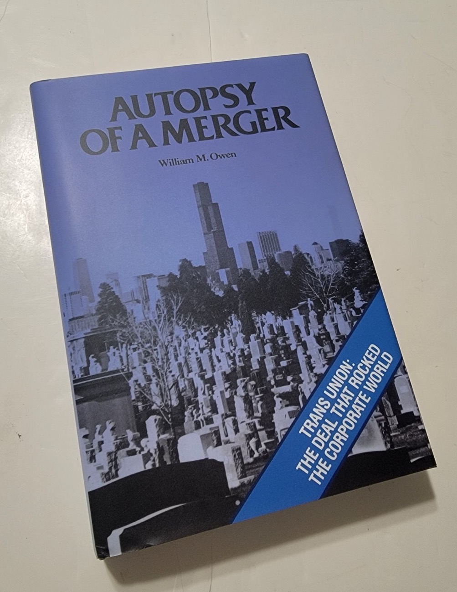

1980年9月的一个周六，芝加哥商人杰伊·普利兹克（Jay Pritzker）在家中接待了Trans Union公司董事长兼CEO杰罗姆·范·戈科姆（Jerome Van Gorkom）。范·戈科姆开门见山：他愿意以每股55美元的价格将Trans Union整体出售给普利兹克家族控制的Marmon集团。这一报价较Trans Union当时39.5美元的股价溢价近40%，但远低于公司的内在价值。普利兹克当场拍板，并要求次日晚间之前给出最终答复。两天后，Trans Union董事会在一次仅两小时、未聘请独立财务顾问进行估值的会议上批准了这笔总价约6.88亿美元的杠杆收购交易。
这场交易随即引爆了美国公司法史上最具争议的诉讼之一——Smith v. Van Gorkom案（488 A.2d 858, Del. 1985）。特拉华州最高法院裁定Trans Union董事会构成"重大过失"（gross negligence），认为董事们在未获取充分信息的情况下仓促批准合并，违反了注意义务（duty of care），因此不能援引商业判断规则（business judgment rule）获得免责保护。最终，董事们同意支付2350万美元的和解金，其中1000万美元由董事责任保险承担，而普利兹克本人——尽管并非被告——支付了余下的1350万美元。
这一判决震动了整个美国商界。上市公司的董事和高管责任保险（D&O保险）保费急剧飙升，部分保险公司甚至威胁停售此类保单。特拉华州立法机构在压力下于1986年紧急通过了《特拉华州一般公司法》第102(b)(7)条，允许公司在章程中加入免除董事因违反注意义务而承担个人赔偿责任的条款。此案还催生了一项至今通行的行业惯例：在任何上市公司并购交易中，董事会必须聘请投资银行出具独立的公允意见书（fairness opinion），否则将面临诉讼风险。可以说，Trans Union案从根本上重塑了美国公司治理的游戏规则。
《一场并购的尸检》的作者威廉·M·欧文（William Miller Owen）并非旁观者——他在交易发生时任职于Trans Union公司的法务部门，对事件全貌有着第一手的了解。欧文的写作起初以连载形式发表于芝加哥知名商业媒体Crain's Chicago Business。普利兹克家族在1983年对欧文提起诉讼，试图阻止出版。时任Crain's主编Rance Crain对此颇为不解，他撰文指出："在已发表的章节中，普利兹克家族的形象相当正面"，后续内容中"也几乎没有什么是此前未曾报道过的，或鲍勃·普利兹克本人不曾在其他场合夸耀过的"。这场诉讼最终未能阻止出版，欧文于1986年自费出版了全书，共341页。
欧文的叙事风格融合了严谨的财务细节与丰富的人物刻画。书中基于大量访谈和对话记录，完整重现了交易从酝酿到谈判、从董事会投票到法庭交锋的全过程。普利兹克作为交易者的果断与精明，范·戈科姆作为即将退休的CEO在税务筹划压力下的焦虑与冲动，董事们在信息不足时的集体盲从——这些细节在欧文笔下构成了一部关于权力、贪婪与制度缺陷的商业悲剧。
知名书评人Brian Gongol评价此书"应当成为价值投资者和经济金融学生的必读经典"，称其为"最接近杰伊·普利兹克本人撰写的教科书"。法学教授Robert T. Miller在William & Mary Business Law Review上发表长文专门讨论此案时，特别致谢欧文提供了关于交易内幕"极具启发性的讨论"。此书在Goodreads上获得4.5分（满分5分）的高评价，长期绝版，二手市场价格不菲，在投资与法律圈内被视为不可替代的一手文献。
对于关注公司治理、并购博弈与董事责任的中国读者而言，这本书提供了一个极为罕见的内部视角：一笔看似对股东有利的溢价收购，何以因决策程序的草率而沦为法律史上的反面教材；一位精于计算的交易者，又如何在法律与商业的夹缝中以远低于内在价值的价格完成收购。Trans Union案的教训至今仍在回响——它提醒所有董事会成员，在重大交易面前，充分知情不是可选项，而是法定义务。